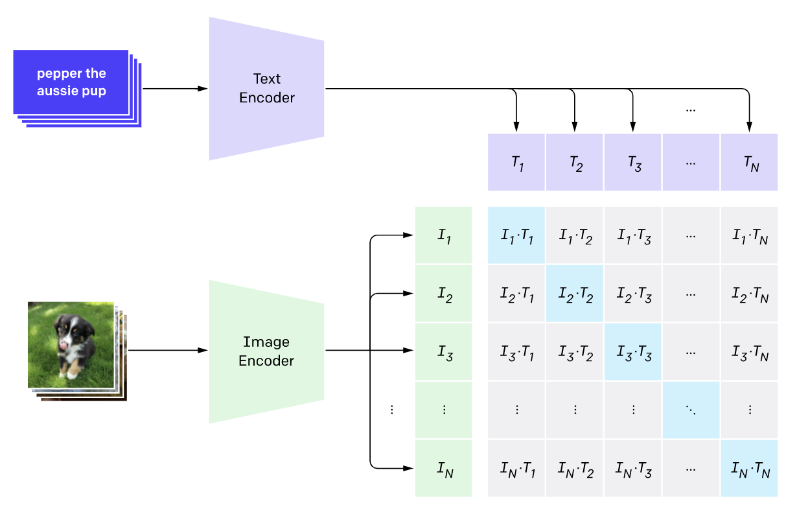
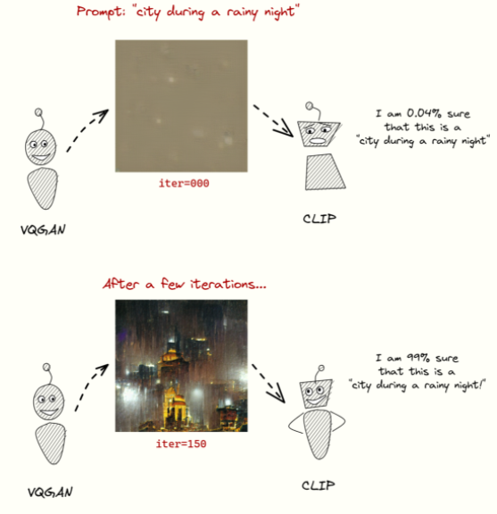

<div class="content">
  <div class="header-wrapper">
    <div class="heading-wrapper">
      <h1>How is it generated ?</h1>
    </div>
    <p width="100%">
      VQGAN+CLIP is a neural network architecture that builds upon the
      revolutionary CLIP architecture published by OpenAI in January 2021. It is
      a text-to-image model that generates images of variable size given a set
      of text prompts (and some other parameters). There have been other
      text-to-image models before (e.g. AttentionGAN), but the VQGAN+CLIP
      architecture brings it on a whole new level:
    </p>
    <h1 class="list-title">What is VQGAN ?</h1>
    <ul>
      <li>VQGAN = Vector Quantized Generative Adversarial Network</li>
      <li>a type of neural network architecture</li>
      <li>
        it combines convolutional neural networks (traditionally used for
        images) with Transformers (traditionally used for language)
      </li>
      <li>
        was first proposed in the paper “Taming Transformers” by University
        Heidelberg (2020)
      </li>
    </ul>
    <h1 class="list-title">What is CLIP ?</h1>
    <ul>
      <li>CLIP = Contrastive Language-Image Pretraining</li>
      <li>
        Model trained to determine which caption from a set of captions best
        fits with a given image
      </li>
      <li>it also uses transformers</li>

      <li>Great on unseen datasets</li>
    </ul>
    <div class="row">
      <div class="col-8">
        
      </div>
      <div class="col-4">
        
      </div>
    </div>
  </div>
</div>
